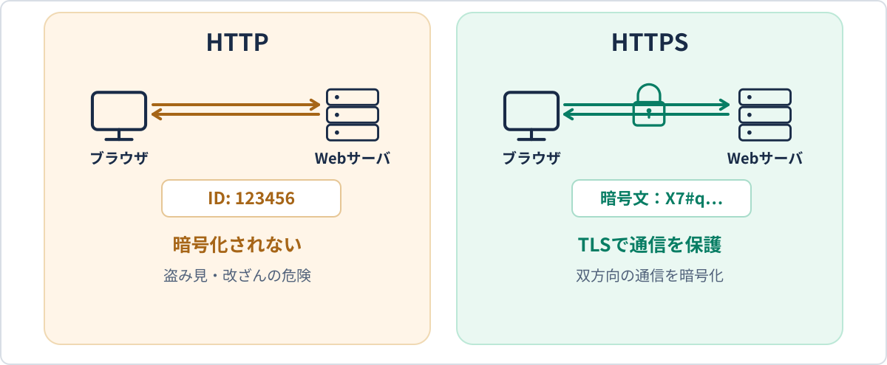
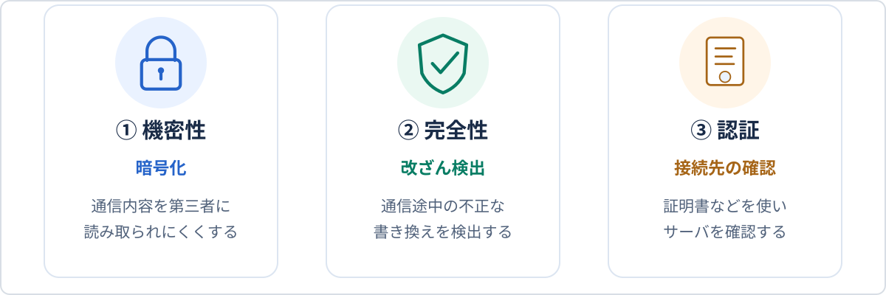
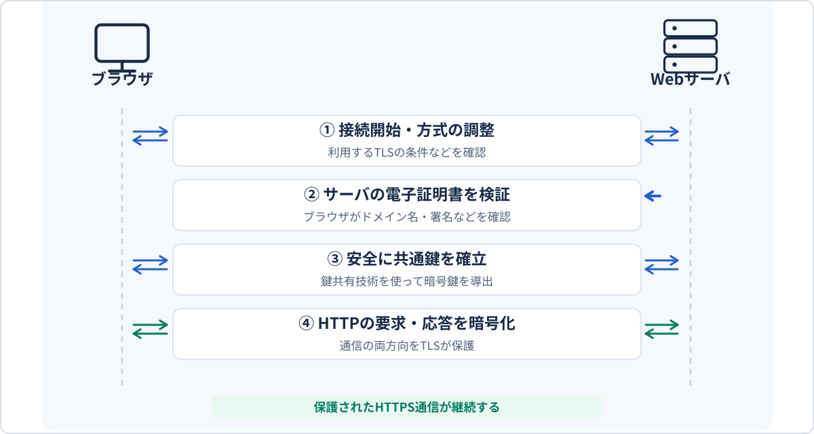
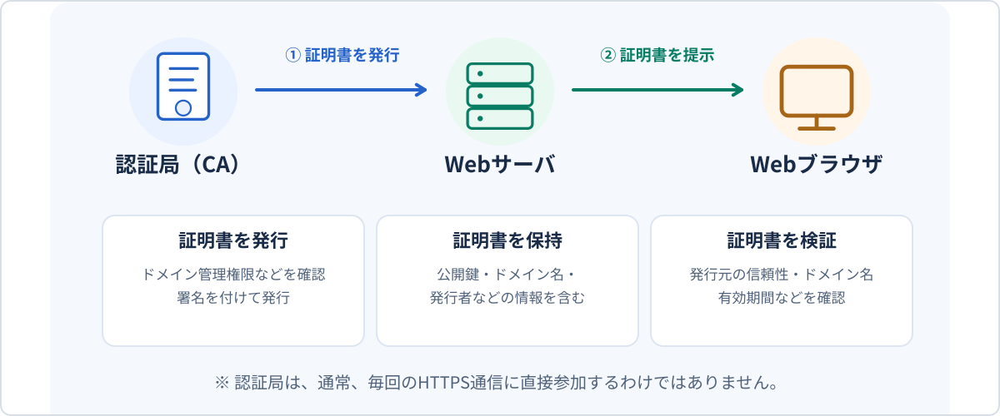
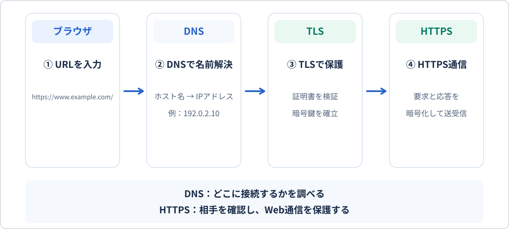
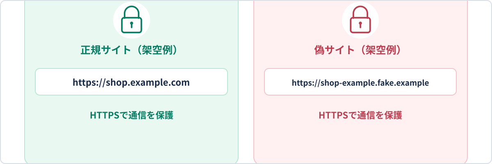

HTTPSとは
HTTPS（Hypertext Transfer Protocol Secure）とは、WebブラウザとWebサーバの間でやり取りする情報を暗号化し、安全に通信するための仕組みです。
Webサイトでは、ページの閲覧だけでなく、ログイン時のパスワードや、オンラインショッピングでの住所・クレジットカード情報など、さまざまな情報が送受信されています。
こうした情報が通信途中で第三者に読み取られたり、書き換えられたりすると、情報漏えいや不正利用につながるおそれがあります。
HTTPSは、通信内容を暗号化するとともに、接続先のサーバを確認することで、これらの危険を減らします。
HTTPとHTTPSの違い
HTTPとは
HTTP（Hypertext Transfer Protocol）は、WebブラウザとWebサーバの間で情報をやり取りするための通信規約（プロトコル）です。
例えば、ブラウザでWebページを開くと、ブラウザはWebサーバにページのデータを要求します。Webサーバは、その要求に応じてHTMLや画像などのデータを返します。
HTTPは、このような要求と応答の方法を定めています。
通常のHTTPには通信内容を暗号化する仕組みがありません。そのため、通信経路上で第三者がデータを取得すると、内容を読み取られたり、書き換えられたりするおそれがあります。
HTTPSとは
HTTPSは、HTTPによる通信をTLSという技術で保護したものです。
TLSによって通信内容が暗号化されるため、第三者が通信データを取得しても、その内容を簡単には読み取れません。
また、通信途中での改ざんを検出したり、電子証明書などを使って接続先を確認したりすることもできます。

| 比較項目 | HTTP | HTTPS |
|---|
| URLの先頭 | http:// | https:// |
|---|
| 通信の暗号化 | なし | あり |
|---|
| 接続先の確認 | 標準では行わない | 電子証明書などで確認 |
|---|
| 改ざんの検出 | 標準では行わない | TLSによって検出 |
|---|
| 標準的なポート番号 | 80 | 443 |
|---|
HTTPSでは、ブラウザからWebサーバに送る情報だけでなく、Webサーバからブラウザに返す情報も暗号化されます。
つまり、HTTPSは双方向の通信を保護する仕組みです。
現在では、パスワードや個人情報を扱うサイトだけでなく、一般的なWebサイトでもHTTPSの利用が基本となっています。
TLS
HTTPSによる安全な通信を実現する技術が、TLS（Transport Layer Security）です。
TLSは、インターネット上で通信を安全に行うためのプロトコルです。
以前はSSL（Secure Sockets Layer）が使われていましたが、現在ではその後継であるTLSが使われています。
SSLは古い技術であり、安全性に問題があるため、現在の通信では利用されていません。
なお、「SSL証明書」「SSL/TLS」という名称は現在でも使われていますが、実際の安全な通信には主にTLSが利用されています。
TLSの三つの働き
TLSには、通信の安全性を高めるための三つの重要な働きがあります。
- 機密性（暗号化）：通信内容を暗号化し、第三者がデータを取得しても内容を読み取れないようにします。例えば、ログイン時に送信するパスワードや、オンラインショッピングで入力した個人情報を、通信途中で盗み見される危険を減らします。
- 完全性（改ざんの検出）：通信途中でデータが不正に書き換えられた場合に、その改ざんを検出します。例えば、送信した注文内容などが通信途中で変更された場合、改ざんされたデータをそのまま正常なものとして受け取らないようにします。
- 認証（接続先の確認）：電子証明書などを利用して、接続先が目的のドメインに対応する正当なサーバであることを確認します。これにより、通信経路上で第三者が正規のサーバになりすます危険を減らします。
このように、TLSは暗号化だけでなく、改ざんの検出や通信相手の確認も行っています。

TLSによる暗号化通信の流れ
HTTPSでWebサイトに接続するとき、ブラウザとWebサーバは、安全な通信を始めるための準備を行います。
この準備のやり取りをTLSハンドシェイクといいます。
基本的な流れは次のとおりです。
- ブラウザとWebサーバが接続を開始し、使用するTLSの方式などを調整します。
- Webサーバが電子証明書を提示し、ブラウザが接続先を確認します。
- 公開鍵暗号技術などを利用して、通信を暗号化するための共通の鍵を確立します。
- 確立した鍵を使い、ブラウザとWebサーバの間で暗号化された通信を行います。

実際のデータの暗号化には、主に共通鍵暗号方式が使われます。
共通鍵暗号方式は、同じ鍵を使って暗号化と復号を行う方式で、大量のデータを高速に処理できるという特徴があります。
一方、通信を開始するときには、公開鍵暗号技術などを利用して、安全に共通の鍵を確立します。
このように、HTTPSでは複数の暗号技術を組み合わせ、安全性と処理速度を両立しています。
電子証明書と認証局
通信内容を暗号化するだけでは、安全な通信が実現するとは限りません。
例えば、銀行のWebサイトに接続したつもりでも、第三者が用意した別のサーバに接続してしまうと、暗号化された通信であっても、その相手に情報を送ってしまう可能性があります。
そこで、HTTPSでは電子証明書（デジタル証明書）を利用して、接続先のサーバを確認します。
電子証明書とは
電子証明書は、公開鍵とドメイン名などの情報を結び付け、その正当性を確認するための電子的な証明書です。
Webサーバの電子証明書には、主に次のような情報が含まれています。
- ドメイン名：証明書が対応するWebサイトのドメイン名
- 公開鍵：サーバが持つ秘密鍵に対応する公開鍵
- 発行者：証明書を発行した認証局
- 有効期間：証明書を使用できる期間
- 電子署名：証明書の内容を検証するための情報
認証局（CA）とは
認証局（CA：Certificate Authority）は、電子証明書を発行する第三者機関です。
認証局は、申請者が対象のドメインを管理していることなど、証明書の種類に応じた確認を行ったうえで証明書を発行します。
ブラウザは、Webサーバから提示された電子証明書について、主に次の点を確認します。
- 信頼できる認証局につながる証明書であるか。
- 証明書のドメイン名が接続先と一致しているか。
- 証明書が有効期間内であるか。
- 証明書の電子署名などが正しいか。
これらの確認によって、ブラウザは接続先の正当性を判断します。

電子証明書は、Webサイトに書かれている情報が正しいことや、そのサイトの運営者が必ず信頼できることまで保証するものではありません。この点は、HTTPSの限界を理解するうえで重要です。
Webページが表示されるまで
Webページを表示する際には、DNSによる名前解決と、HTTPSによる通信の保護がそれぞれ働きます。

DNSはホスト名に対応するIPアドレスを調べ、接続先を特定するために使われます。TLSは接続先を確認して通信を保護し、その上でHTTPの要求と応答がやり取りされます。
つまり、DNSは接続先を調べる仕組み、HTTPSはWeb通信を保護する仕組みです。
HTTPSで防げること・防げないこと
HTTPSはWeb通信の安全性を高める重要な技術ですが、HTTPSを利用していればWebサイトのすべてが安全になるわけではありません。
HTTPSが主に保護するのは、ブラウザとWebサーバの間の通信です。
| HTTPSで保護できること | HTTPSだけでは保証できないこと |
|---|
| 通信内容の盗み見を防ぐ | Webサイトに掲載された情報の正確性 |
| 通信途中の改ざんを検出する | 詐欺サイトではないこと |
| 接続先のドメインに対応するサーバを確認する | 商品やサービスの品質 |
| 通信経路上でのなりすましを防ぐ | ウイルス感染の完全な防止 |
| 送受信する情報を暗号化する | 送信先での個人情報の適切な管理 |
HTTPSでもフィッシング詐欺は起こる
フィッシング詐欺とは、銀行や通販サイトなどを装った偽のWebサイトに利用者を誘導し、パスワードや個人情報などを盗み取る行為です。
偽サイトもHTTPSを使用していれば、ブラウザと偽サイトの間の通信は暗号化されます。
つまり、通信が暗号化されていることと、Webサイト自体が信頼できることは別の問題です。

HTTPSで接続できることを確認するだけでなく、URLのドメイン名やサイトの内容などを確認することも重要です。